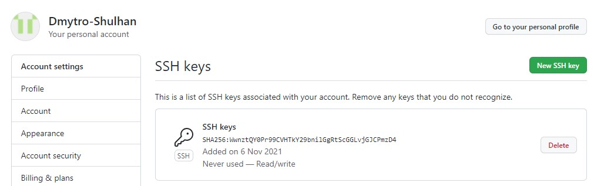

Основні команди для Git!
- git config --global user.name Dmytro Shulhan - команда для вводу, або зміни імені користувача.
- git config --global user.email shulhan.d.v@gmail.com - команда для вводу, або зміни електронної пошти користувача.
- git init - ця команда створює в поточному каталозі новий підкаталог з ім'ям .git, що містить всі необхідні файли репозиторію - структуру Git репозиторію.
- git status - основний інструмент, який використовується для визначення, які файли в якому стані знаходяться.
- git add - ця команда оновлює індекс, використовуючи поточний контент, знайдений у робочому дереві, щоб підготувати контент для наступної фіксації. Зазвичай використовується «.» або «*» для додавання усіх файлів. Щоб додати один файл – вказуємо його ім'я та розширення.
- git commit - записує зміни до репозиторію. Створює нову фіксацію, що містить поточний вміст індексу та повідомлення журналу, що описує зміни. Можна вказати без аргументу -m, в такому випадку відкриється текстовий редактор по замовчуванню, в якому потрібно буде описати коміт. Якщо це сталось випадково, вводите :q і натискаєте Enter.
- git log - відображає журнал з історією комітів.
- git checkout - використовується для перемикання гілок та вивантаження їхнього вмісту в робочу директорію.
- git branch - це свого роду "менеджер гілок". Ця команда вміє перераховувати ваші гілки, створювати нові, видаляти та перейменовувати їх.
- git push - використовується для встановлення зв'язку з віддаленим репозиторієм, обчислення локальних змін відсутніх у ньому, та власне їх передачі у вищезгаданий репозиторій. Цій команді потрібне право на запис у репозиторій, тому вона використовує автентифікацію.
- git pull - працює як комбінація команд git fetch та git merge, тобто. Git спочатку забирає зміни із зазначеного віддаленого репозиторію, а потім намагається поєднати їх із поточною гілкою.
- git marge - використовується для злиття одної або декількох гілок в поточну.
- git clone - створює копію існуючого репозиторію в новий каталог.
.gitignore - необхідний для приховування файлів і папок від системи контролю версій Git. Зазвичай приховують конфігураційні файли (особливо з паролями), тимчасові файли та папки.
- git revert - використовується для відкату змін в історії коммітів репозиторію.
- git reset - команда для скасування локальних змін у репозиторії.
- git rebase - це процес переміщення послідовності коммітів до нового базового коміту чи їх об'єднання.
- git cherry-pick - команда використовується для перенесення окремих комітів з одного місця репозиторію до іншого.
- git stash - використовується для тимчасового збереження всіх незакоммічених змін для очищення робочої директорії без необхідності комітувати незавершену роботу на нову гілку. Відкладення змін корисне, якщо вам необхідно переключити контекст і ви поки що не готові до створення комміту.
